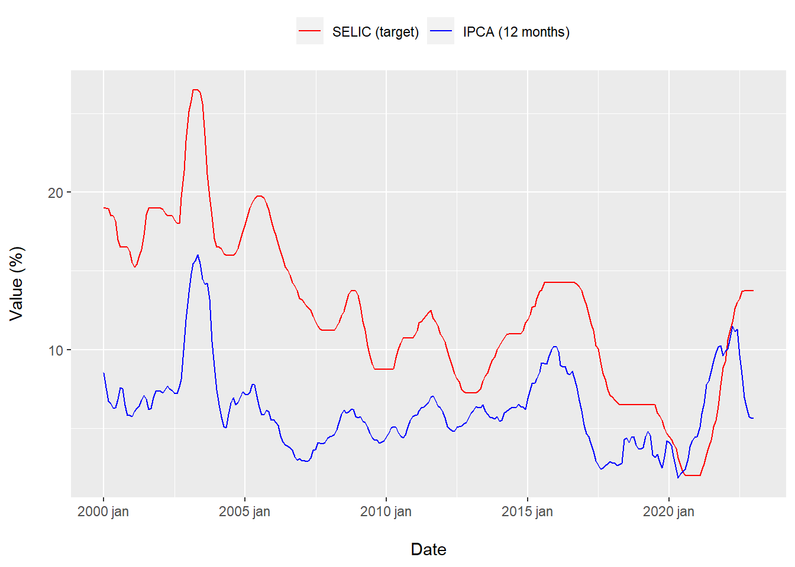
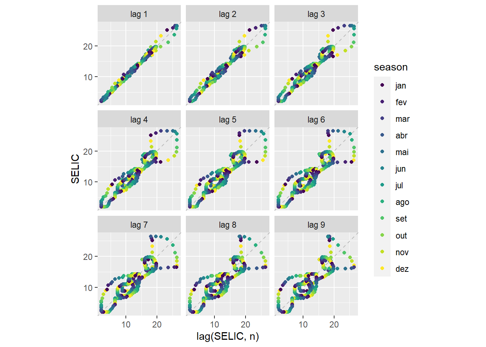
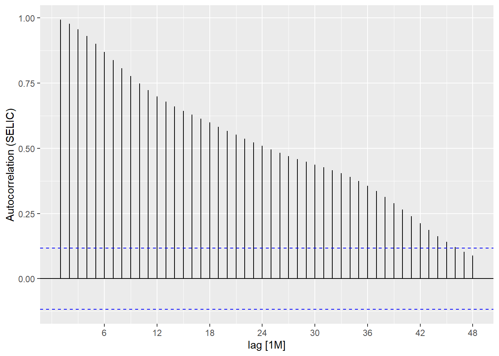
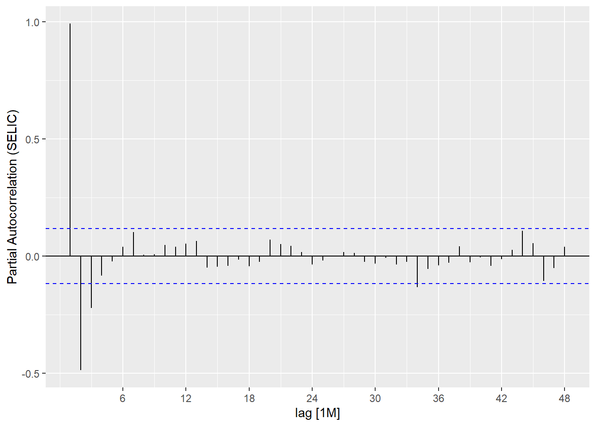
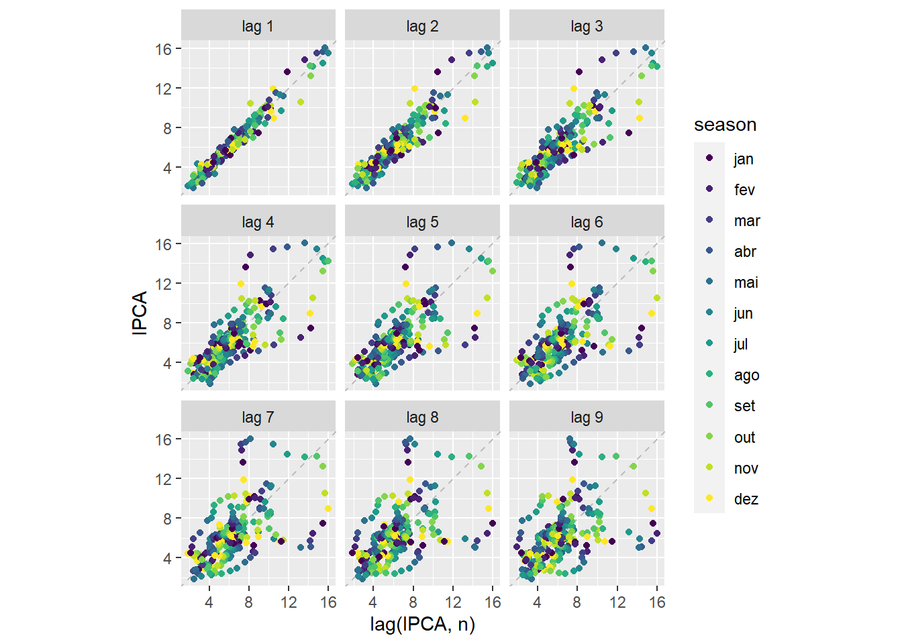
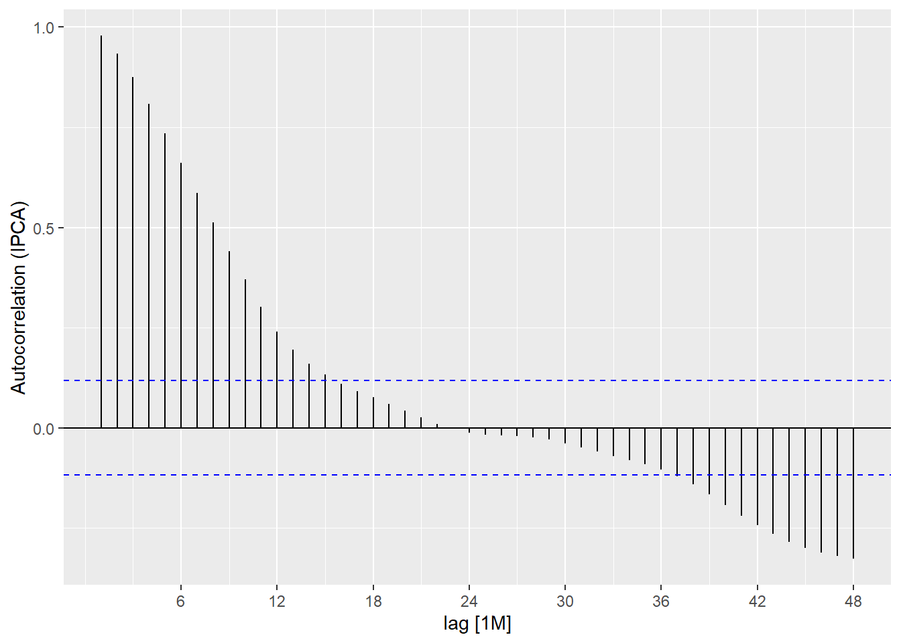
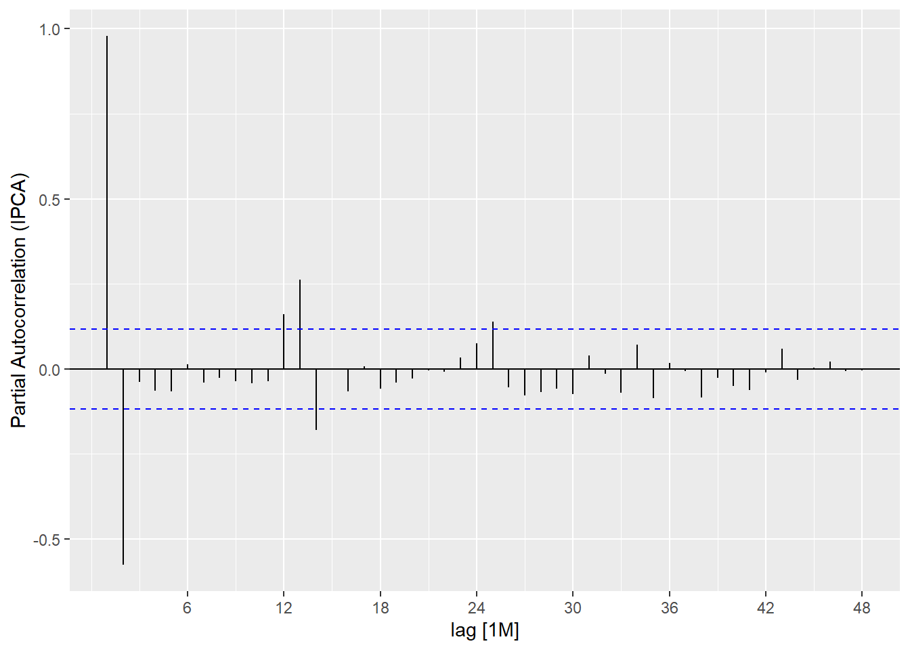
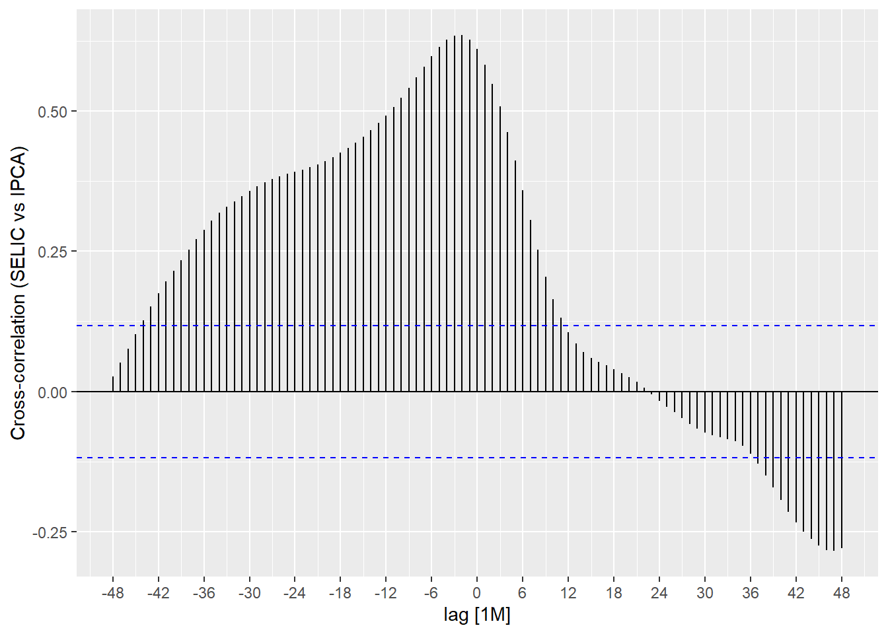

Fisher hypothesis

Overview
This report contains a demonstration of the Fisher hypothesis using real world data from Brazil’s Central Bank (BCB) time series.
The analysis follows the program outlined by Hadley Wickham in the book R for Data Science.

Please note that this is just quick exercise and some details may end up missing.
Hypothesis
Basic hypothesis statement:
Interest rates and inflation are inversely proportional.
In mathematical terms, this hypothesis can be written as follows:
\[ \begin{cases} H_{0} : \rho \ge 0 \\ H_{a} : \rho < 0 \end{cases} \]
The hypothesis will be tested by comparing Brazil’s Central Bank (BCB) time series of the targeted SELIC rate (Brazil’s basic interest rate) and the Extended National Consumer Price Index (IPCA) (Brazil’s official Consumer Price Index).
Fetch data
library(dplyr)
library(GetBCBData)
library(lubridate)
selic_fetched_data <- GetBCBData::gbcbd_get_series(
id = c("Meta Selic definida pelo Copom" = 432),
first.date = lubridate::dmy("01/01/1999"),
last.date = lubridate::today()
)
ipca_fetched_data <- GetBCBData::gbcbd_get_series(
id = c("Indice nacional de preços ao consumidor-amplo (IPCA)" = 433),
first.date = lubridate::dmy("01/01/1999"),
last.date = lubridate::today()
)Data wrangling
Note that the IPCA data was annualized using a 12-month window.
library(magrittr)
library(runner)
library(tsibble)
selic_data <- selic_fetched_data %>%
dplyr::transmute(date = ref.date, value = value)
ipca_data <- ipca_fetched_data %>%
dplyr::transmute(date = ref.date,
value = runner::runner(
x = value,
f = sum,
k = "12 months",
idx = date,
na_pad = TRUE
)) %>%
dplyr::filter(!is.na(value))
selic_data_by_month <- selic_data %>%
dplyr::mutate(floor_date = lubridate::floor_date(date, unit = "month")) %>%
dplyr::group_by(floor_date) %>%
dplyr::summarise(value = mean(value)) %>%
dplyr::ungroup() %>%
dplyr::rename(date = floor_date) %>%
dplyr::filter(!is.na(date), !is.na(value))
data <- dplyr::full_join(
x = selic_data_by_month,
y = ipca_data,
by = "date"
) %>%
dplyr::rename(selic = value.x, ipca = value.y) %>%
dplyr::select(date, selic, ipca) %>%
dplyr::filter(!is.na(selic), !is.na(ipca)) %>%
tsibble::as_tsibble(index = date) %>%
tsibble::index_by(month = tsibble::yearmonth(date)) %>%
dplyr::summarise(dplyr::across(dplyr::everything(), mean)) %>%
dplyr::select(-date)Data visualization
Relation between the targeted SELIC rate (Brazil’s basic interest rate) and the Extended National Consumer Price Index (IPCA) (Brazil’s official Consumer Price Index).
library(checkmate)
library(ggplot2)
library(rlang)
plot_line <- function(data) {
checkmate::assert_class(data, "tbl_ts")
index_var <- tsibble::index_var(data)
plot <- data %>%
ggplot2::ggplot() +
ggplot2::geom_line(
mapping = ggplot2::aes(
x = .data[[index_var]], y = selic, color = "SELIC (target)"
)
) +
ggplot2::geom_line(
mapping = ggplot2::aes(
x = .data[[index_var]], y = ipca, color = "IPCA (12 months)"
)
) +
ggplot2::scale_color_manual(
"",
values = c("red", "blue"),
breaks = c("SELIC (target)", "IPCA (12 months)")
) +
ggplot2::labs(x = "\nMonth", y = "Value (%)\n") +
ggplot2::theme(legend.position = "top")
print(plot)
invisible(NULL)
}
plot_line(data)
Lags analysis
- SELIC
library(feasts)
data %>%
feasts::gg_lag(y = selic, geom = "point") +
ggplot2::labs(x = "lag(SELIC, n)", y = "SELIC")
data %>%
feasts::ACF(y = selic, lag_max = 48) %>%
feasts::autoplot() +
ggplot2::labs(y = "Autocorrelation (SELIC)")
data %>%
feasts::PACF(y = selic, lag_max = 48) %>%
feasts::autoplot() +
ggplot2::labs(y = "Partial Autocorrelation (SELIC)")
- IPCA
library(feasts)
data %>%
feasts::gg_lag(y = ipca, geom = "point") +
ggplot2::labs(x = "lag(IPCA, n)", y = "IPCA")
data %>%
feasts::ACF(y = ipca, lag_max = 48) %>%
feasts::autoplot() +
ggplot2::labs(y = "Autocorrelation (IPCA)")
data %>%
feasts::PACF(y = ipca, lag_max = 48) %>%
feasts::autoplot() +
ggplot2::labs(y = "Partial Autocorrelation (IPCA)")
Hypothesis test
Basic hypothesis statement:
Interest rates and inflation are inversely proportional.
\[ \begin{cases} H_{0} : \rho \ge 0 \\ H_{a} : \rho < 0 \end{cases} \]
Note that this hypothesis must be tested in a progression, since the Fisher’s effect need time to propagate in the economy.
data %>%
feasts::CCF(y = selic, x = ipca, lag_max = 48) %>%
feasts::autoplot() +
ggplot2::labs(
y = "Cross-correlation (SELIC vs IPCA)"
)